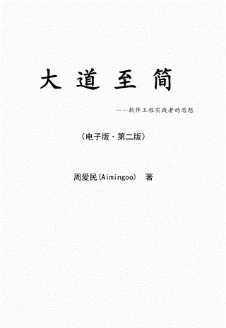

关于这个标题
哈哈，其实这个标题是七年前第一次发布这本小书的电子版时使用的。那个时候比现在爱咋呼，所以标题也就有点哗众，现在在这么写，只是怀个旧罢了。
不过真的是要发布这本书的新电子版来着。关于这次发布的原因，在前言里有写，附后。这里先提供下载：

微博用户：取消下载了哦，已经发布电子版第三版了哦
也可以通过Skydriver直接下载，在这里（请进入“About - 大道至简”目录下载即可）：
http://cid-f9303c43d5ceafb3.skydrive.live.com/browse.aspx/.Public
关于本电子版
决定发布这本书的电子版（第二版），这与它的姊妹篇《大道至易——实践者的思想》是有些关系的。
几个月前，图灵出版的编辑给我发来邮件，问我是否愿意出版新书《大道至易》的电子版，以向读者提供在手机、平板上的付费阅读。但是，当时《大道至易》上市不久，难道纸质版的销售还没展开就要出电子版本吗？再加上潜在的盗版威胁，我一时间很有些犹豫。
然而，我最终决定应该发布《大道至易》的电子版。我在给图灵编辑的信中写到：
原因很简单，为什么七年前我因为《大道至简》过薄不能出版就可以发布电子版，而今天《大道至易》能出版便不发布电子版了呢？我想，无论是哪种方式出版，作者的心态应放在"让读者可读"上面，而不是放在"怕读者盗版而不做什么事"上面。
所以我很坚定地支持《大道至易》电子版的发布。
由此，我也想到了这本七年前发布的小书《大道至简》。事实上它在随后的几年中，已经由电子工业出版了纸质版本，算上电子版已有四版之多，最新也是最终的版本是“典藏版”，出版于2012年8月。而在这么长的时间里，电子版一直未有更新，甚至连勘误也没有做过。作为出书者，我是有愧于读者的。
因此我决定发布《大道至简》的电子版（第二版），其目的在于对原书做完整的修订，并发布平板与阅读器适用的版本。在陈述它的具体修改之前，我必须说明的是：限于版权，我无法提供纸质版本中才有的新章节，只能基于原电子版做修订并添加我个人已公开的相关文章。
电子版（第二版）对所有章节的内容进行了文字校订，与其纸质版本的最终内容保持了一致。所有漫画采用原电子版本（在此感谢漫画作者邵荣国、明明夫妇），而并未附录“愚公移山”故事，以及全套四格漫画——在这一点上有些遗憾，因为这是书中一条相当重要的暗线。
电子版本未收录纸质版本（参考典藏版）如下章节：
第6章，谁是解结的人（讨论团队与管理）
第8章，你看得到工具的本质吗（讨论工具与工匠思维）
第10章，具体工程（讨论具体工程的思想与基本方法）
第4章第3节，沟通的三层障碍
第9章第5节，审视AP和XP
第11章第7节，细解“法”与“式”
其中的第10章的前三节主要取材于我的博客文章《杀不死的人狼》，因此本电子书收录了后者并做了适当的编排。
本电子版为最终版本。谢谢与他一路行来的朋友们，我期待与读者们的交流，并由衷地感谢大家的关爱。
希望您喜欢这本小书。
周爱民2012年12月15日
mailto:aiming@gmail.com